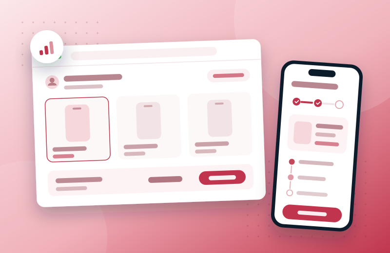
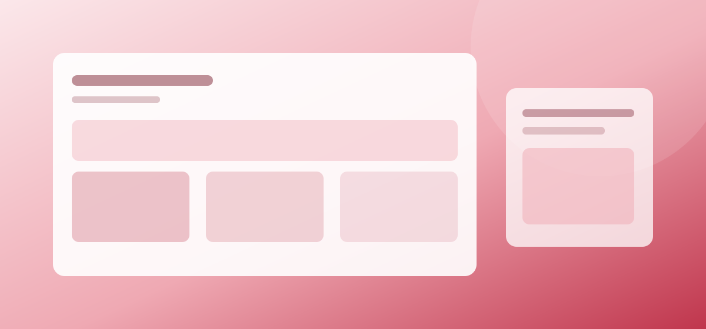
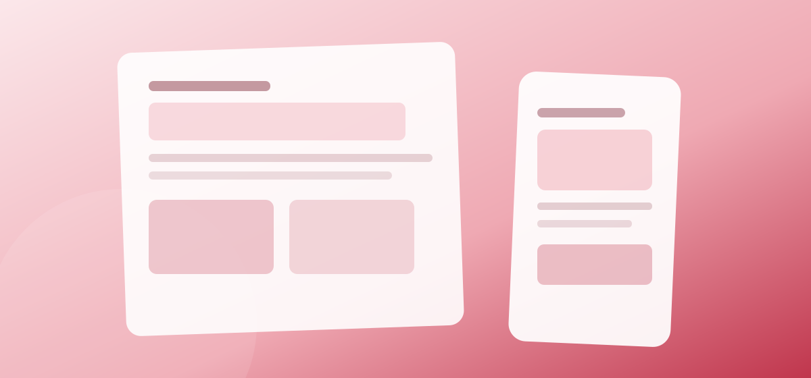

Rogers Communications · Telecom, via EPAM
OneView: cutting the sales rep's cognitive load — −25% time-on-task, −80% errors

The problem
Care reps lost time and made costly mistakes in OneView's multi-line device buy flow: too many clicks, too much on-screen complexity, and payment logic that forced them back and forth or into a second system mid-conversation. Every customer interaction ran slower, error rates climbed, and new agents took weeks to get up to speed.
My role
Experience Designer on the EPAM engagement — owning the redesign of the buy flow across research, IA, interaction design, and accessibility, working with product, engineering, and Rogers stakeholders.
The work — decisions that mattered

Layout grounded in how reps actually work
Research showed reps didn't rely on a large product photo — so I shrank the device image to a compact visual anchor and gave that space back to the information reps act on, cutting scanning effort instead of decorating the page.

One legible payment decision
I merged scattered payment options into a single view with an automatic total-savings calculation — ending the back-and-forth (and the second system) that carried the highest cognitive load.
Depth on demand
A full-screen device-spec modal, a compare-up-to-3-devices feature, and stock availability split by delivery vs in-store pickup — so reps could answer detailed questions without ever leaving the buy flow.
Also part of the work
- Preselected the lowest-price storage option (reps always open the conversation at the lowest price point) with a dynamic SKU header updating live as options change.
- Simplified the IA and minimized clicks so the flow matched the real sequence of a sales conversation.
- Ran accessibility audits and implemented WCAG fixes — removing a large share of the old flow's interaction errors.
Outcome
25% less time-on-task on the buy flow, an 80% drop in user error rate, and new-agent onboarding cut from 3 weeks to 1. The work earned the “Customer Centered” badge twice and a 3.9/4 stakeholder rating — reps could hold the customer conversation inside one coherent flow instead of working around the tool.
UX research · information architecture · interaction & responsive design · design systems · UX writing · competitive analysis · WCAG accessibility audits · prototyping
Looking back
Given another cycle, I'd extend the same cognitive-load lens to the post-sale service flows reps rely on every day.
Let's talk
Open to senior product-design roles across Poland — hybrid or remote, B2B or employment contract.